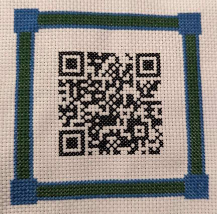

I love the intersection of technology and art!
I've done crafts for many years. In recent years in particular, though, I have really enjoyed incorporating technology into my art, through many different means. These means have included soft circuits, scannable cross-stitched QR codes, and using tools like cross-stitch to reinforce concepts like the box model and RGB/CYMK color theory. Please enjoy the examples below!
the box model
soft circuits (find and squash bugs)
RGB and color theory


QR cross-stitch: log in to my friend Emily's wi-fi network
